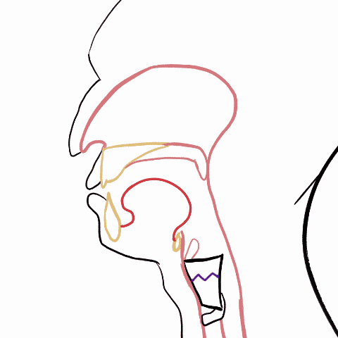
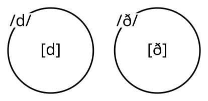
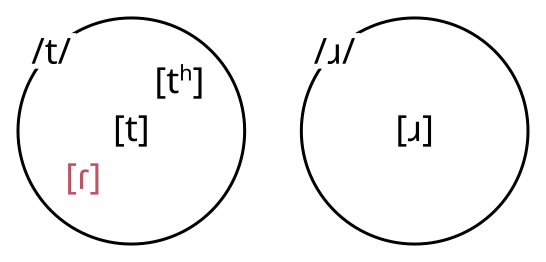
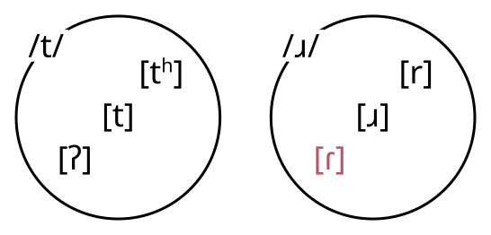
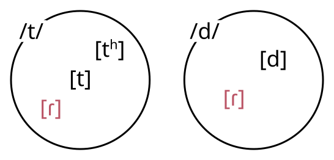
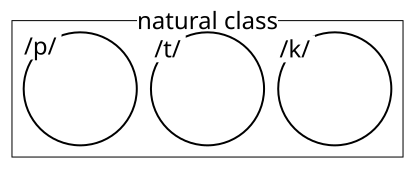
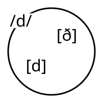

Loading required package: sysfontsLoading required package: showtextdbLoading required package: sysfontsLoading required package: showtextdbThere is no definition of the difference between Phonetics and Phonology that won’t make someone angry.
English Consonants

English Consonants
Linguistics is all about answering the question “What is your knowledge of your language?”
long-lag VOT

short-lag VOT
How would you transcribe your pronunciation of a novel word like:
“kowspie”
| kʰ | k | |
| pʰ | kʰospʰi | kospʰi |
| p | kʰospi | kospi |
Your preference (I’m guessing!) for [kʰospi], demonstrates a kind of knowledge about the sounds of language beyond just the fact that there are long-lag and short-lag VOT segments.
| play | ˈpʰleɪ | dɪ.ˈspleɪ | display |
| card | ˈkʰɑɹd | dɪ.ˈskɑɹd | discard |
| long | longing | longer |
| lɔŋ | lɔŋɪŋ | lɔŋgɹ̩ |
Upshot: Abstraction is necessary
A label for a set of sounds that all count as basically the same.

The phoneme /p/ has at least two allophones, [p] and [pʰ]

We use “/p/” as convenient label for the phoneme, but the phoneme itself is not a sound.
We could have used “” as the label for the phoneme, but it would be more confusing to read.
Not every phoneme has the same number of allophones.
There isn’t a universal set of relationships between allophones and phonemes.
American English

Scottish English

There isn’t always a 1-to-1 relationship between phones and phonemes.
American English

Groups of phonemes that pattern together are “natural classes”

Which sounds are allophones of which phonemes, and which phonemes form natural classes, are all language specific.
If two sounds are not basically the same, then they are contrastive, and are allophones of different phonemes.
| ether | either |
| [iθɹ̩] | [iðɹ̩] |
Two words that are identical except for the one phoneme in question
d
?
ð
?
If two sounds never appear in the same contexts, they are in a complementary distribution.
Spanish:
[dama]
lady
[dulse]
sweet
[disfrutas]
disguise
[laðo]
side
[universiðað]
university
[granaða]
Granada
English:

Spanish:
